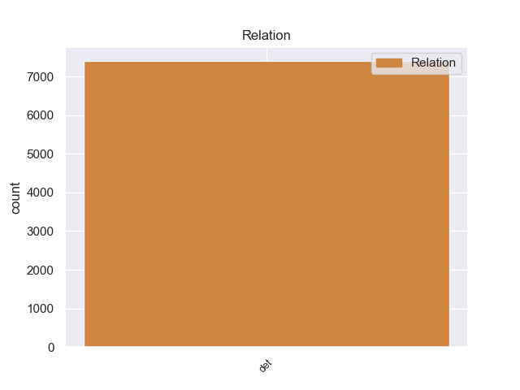
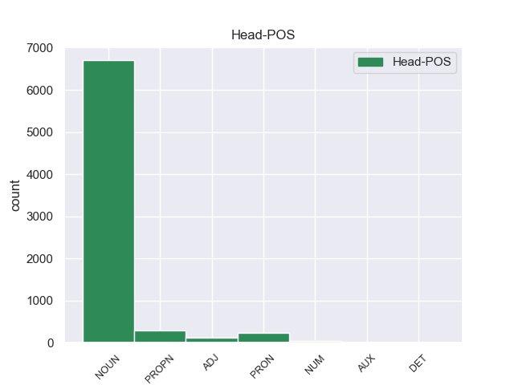
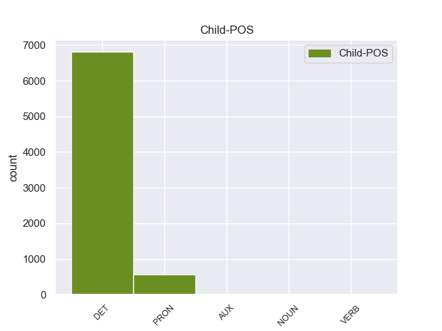

Distribution of features within this leaf



Agreement Rules sorted by frequency.
- When the dependent token is the determiner(det) of the head token, and the head token is NOUN
1 Υποστήριξε _ _ _ _ 0 _ _ _
2 πως _ _ _ _ 0 _ _ _
3 τα _ _ _ _ 0 _ _ _
4 ανθρώπινα _ _ _ _ 0 _ _ _
5 δικαιώματα _ _ _ _ 0 _ _ _
6 των _ _ _ _ 0 _ _ _
7 Θιβετιανών _ _ _ _ 0 _ _ _
8 παραβιάζονται _ _ _ _ 0 _ _ _
9 μέσω _ _ _ _ 0 _ _ _
10 διακρίσεων _ _ _ _ 0 _ _ _
11 , _ _ _ _ 0 _ _ _
12 σε _ _ _ _ 0 _ _ _
13 εφαρμογή _ _ _ _ 0 _ _ _
14 μιας ένας DET DET Case=Gen|Definite=Ind|Gender=Fem|Number=Sing|PronType=Art 15 det _ _
15 πολιτικής πολιτική NOUN NOUN Case=Gen|Gender=Fem|Number=Sing 0 _ _ _
16 που _ _ _ _ 0 _ _ _
17 οι _ _ _ _ 0 _ _ _
18 Κινέζοι _ _ _ _ 0 _ _ _
19 αποκαλούν _ _ _ _ 0 _ _ _
20 " _ _ _ _ 0 _ _ _
21 διαχωρισμός _ _ _ _ 0 _ _ _
22 και _ _ _ _ 0 _ _ _
23 αφομοίωση _ _ _ _ 0 _ _ _
24 " _ _ _ _ 0 _ _ _
25 . _ _ _ _ 0 _ _ _
1 Υποστήριξε _ _ _ _ 0 _ _ _
2 πως _ _ _ _ 0 _ _ _
3 τα _ _ _ _ 0 _ _ _
4 ανθρώπινα _ _ _ _ 0 _ _ _
5 δικαιώματα _ _ _ _ 0 _ _ _
6 των _ _ _ _ 0 _ _ _
7 Θιβετιανών _ _ _ _ 0 _ _ _
8 παραβιάζονται _ _ _ _ 0 _ _ _
9 μέσω _ _ _ _ 0 _ _ _
10 διακρίσεων _ _ _ _ 0 _ _ _
11 , _ _ _ _ 0 _ _ _
12 σε _ _ _ _ 0 _ _ _
13 εφαρμογή _ _ _ _ 0 _ _ _
14 μιας _ _ _ _ 0 _ _ _
15 πολιτικής _ _ _ _ 0 _ _ _
16 που _ _ _ _ 0 _ _ _
17 οι ο DET DET Case=Nom|Definite=Def|Gender=Masc|Number=Plur|PronType=Art 18 det _ _
18 Κινέζοι Κινέζος PROPN PROPN Case=Nom|Gender=Masc|Number=Plur 0 _ _ _
19 αποκαλούν _ _ _ _ 0 _ _ _
20 " _ _ _ _ 0 _ _ _
21 διαχωρισμός _ _ _ _ 0 _ _ _
22 και _ _ _ _ 0 _ _ _
23 αφομοίωση _ _ _ _ 0 _ _ _
24 " _ _ _ _ 0 _ _ _
25 . _ _ _ _ 0 _ _ _
1 Η _ _ _ _ 0 _ _ _
2 επίθεση _ _ _ _ 0 _ _ _
3 της _ _ _ _ 0 _ _ _
4 έκθεσης _ _ _ _ 0 _ _ _
5 Corbett _ _ _ _ 0 _ _ _
6 σ _ _ _ _ 0 _ _ _
7 τις _ _ _ _ 0 _ _ _
8 μικρές _ _ _ _ 0 _ _ _
9 ομάδες _ _ _ _ 0 _ _ _
10 πρέπει _ _ _ _ 0 _ _ _
11 να _ _ _ _ 0 _ _ _
12 αντικατασταθεί _ _ _ _ 0 _ _ _
13 από _ _ _ _ 0 _ _ _
14 μια _ _ _ _ 0 _ _ _
15 συμφωνία _ _ _ _ 0 _ _ _
16 κυρίων _ _ _ _ 0 _ _ _
17 , _ _ _ _ 0 _ _ _
18 με _ _ _ _ 0 _ _ _
19 την ο DET DET Case=Acc|Definite=Def|Gender=Fem|Number=Sing|PronType=Art 20 det _ _
20 οποία οποίος PRON PRON Case=Acc|Gender=Fem|Number=Sing|Person=3|PronType=Rel 0 _ _ _
21 θα _ _ _ _ 0 _ _ _
22 πετύχουμε _ _ _ _ 0 _ _ _
23 ορισμένους _ _ _ _ 0 _ _ _
24 από _ _ _ _ 0 _ _ _
25 τους _ _ _ _ 0 _ _ _
26 στόχους _ _ _ _ 0 _ _ _
27 του _ _ _ _ 0 _ _ _
28 κ. _ _ _ _ 0 _ _ _
29 Corbett _ _ _ _ 0 _ _ _
30 χωρίς _ _ _ _ 0 _ _ _
31 να _ _ _ _ 0 _ _ _
32 περικοπούν _ _ _ _ 0 _ _ _
33 τα _ _ _ _ 0 _ _ _
34 δικαιώματα _ _ _ _ 0 _ _ _
35 των _ _ _ _ 0 _ _ _
36 ομάδων _ _ _ _ 0 _ _ _
37 . _ _ _ _ 0 _ _ _
1 Ο _ _ _ _ 0 _ _ _
2 βιότοπος _ _ _ _ 0 _ _ _
3 των _ _ _ _ 0 _ _ _
4 Κουκουναριών _ _ _ _ 0 _ _ _
5 είναι _ _ _ _ 0 _ _ _
6 ένας _ _ _ _ 0 _ _ _
7 από _ _ _ _ 0 _ _ _
8 τους ο DET DET Case=Acc|Definite=Def|Gender=Masc|Number=Plur|PronType=Art 10 det _ _
9 τρεις _ _ _ _ 0 _ _ _
10 σημαντικότερους σημαντικός ADJ ADJ Case=Acc|Degree=Cmp|Gender=Masc|Number=Plur 0 _ _ _
11 της _ _ _ _ 0 _ _ _
12 χώρας _ _ _ _ 0 _ _ _
13 . _ _ _ _ 0 _ _ _
1 Η _ _ _ _ 0 _ _ _
2 πρώτη _ _ _ _ 0 _ _ _
3 ειδοποίηση _ _ _ _ 0 _ _ _
4 θα _ _ _ _ 0 _ _ _
5 γίνεται _ _ _ _ 0 _ _ _
6 με _ _ _ _ 0 _ _ _
7 την _ _ _ _ 0 _ _ _
8 παρέλευση _ _ _ _ 0 _ _ _
9 πέντε _ _ _ _ 0 _ _ _
10 χρόνων _ _ _ _ 0 _ _ _
11 από _ _ _ _ 0 _ _ _
12 την _ _ _ _ 0 _ _ _
13 ημερομηνία _ _ _ _ 0 _ _ _
14 που _ _ _ _ 0 _ _ _
15 ανοίχθηκε _ _ _ _ 0 _ _ _
16 ο _ _ _ _ 0 _ _ _
17 λογαριασμός _ _ _ _ 0 _ _ _
18 , _ _ _ _ 0 _ _ _
19 η _ _ _ _ 0 _ _ _
20 δεύτερη _ _ _ _ 0 _ _ _
21 σ _ _ _ _ 0 _ _ _
22 την _ _ _ _ 0 _ _ _
23 10ετία _ _ _ _ 0 _ _ _
24 και _ _ _ _ 0 _ _ _
25 η ο DET DET Case=Nom|Definite=Def|Gender=Fem|Number=Sing|PronType=Art 26 det _ _
26 τρίτη τρίτος NUM NUM Case=Nom|Gender=Fem|Number=Sing|NumType=Ord 0 _ _ _
27 σ _ _ _ _ 0 _ _ _
28 την _ _ _ _ 0 _ _ _
29 15ετία _ _ _ _ 0 _ _ _
30 . _ _ _ _ 0 _ _ _
1 Επίσης _ _ _ _ 0 _ _ _
2 , _ _ _ _ 0 _ _ _
3 πρέπει _ _ _ _ 0 _ _ _
4 ασφαλώς _ _ _ _ 0 _ _ _
5 - _ _ _ _ 0 _ _ _
6 και _ _ _ _ 0 _ _ _
7 αυτό αυτός PRON PRON Case=Acc|Gender=Neut|Number=Sing|Person=3|PronType=Dem 8 det _ _
8 το ο DET DET Case=Acc|Definite=Def|Gender=Neut|Number=Sing|PronType=Art 0 _ _ _
9 επιχειρήσαμε _ _ _ _ 0 _ _ _
10 σ _ _ _ _ 0 _ _ _
11 την _ _ _ _ 0 _ _ _
12 Επιτροπή _ _ _ _ 0 _ _ _
13 Περιβάλλοντος _ _ _ _ 0 _ _ _
14 , _ _ _ _ 0 _ _ _
15 Δημόσιας _ _ _ _ 0 _ _ _
16 Υγείας _ _ _ _ 0 _ _ _
17 και _ _ _ _ 0 _ _ _
18 Πολιτικής _ _ _ _ 0 _ _ _
19 των _ _ _ _ 0 _ _ _
20 Καταναλωτών _ _ _ _ 0 _ _ _
21 καθώς _ _ _ _ 0 _ _ _
22 και _ _ _ _ 0 _ _ _
23 σ _ _ _ _ 0 _ _ _
24 την _ _ _ _ 0 _ _ _
25 Επιτροπή _ _ _ _ 0 _ _ _
26 Γεωργίας _ _ _ _ 0 _ _ _
27 και _ _ _ _ 0 _ _ _
28 Ανάπτυξης _ _ _ _ 0 _ _ _
29 της _ _ _ _ 0 _ _ _
30 Υπαίθρου _ _ _ _ 0 _ _ _
31 - _ _ _ _ 0 _ _ _
32 να _ _ _ _ 0 _ _ _
33 ενισχυθεί _ _ _ _ 0 _ _ _
34 η _ _ _ _ 0 _ _ _
35 υποχρέωση _ _ _ _ 0 _ _ _
36 των _ _ _ _ 0 _ _ _
37 κρατών _ _ _ _ 0 _ _ _
38 μελών _ _ _ _ 0 _ _ _
39 να _ _ _ _ 0 _ _ _
40 ενημερώνουν _ _ _ _ 0 _ _ _
41 την _ _ _ _ 0 _ _ _
42 Επιτροπή _ _ _ _ 0 _ _ _
43 , _ _ _ _ 0 _ _ _
44 να _ _ _ _ 0 _ _ _
45 παρέχουν _ _ _ _ 0 _ _ _
46 πληροφορίες _ _ _ _ 0 _ _ _
47 και _ _ _ _ 0 _ _ _
48 στοιχεία _ _ _ _ 0 _ _ _
49 σ _ _ _ _ 0 _ _ _
50 την _ _ _ _ 0 _ _ _
51 Επιτροπή _ _ _ _ 0 _ _ _
52 για _ _ _ _ 0 _ _ _
53 τα _ _ _ _ 0 _ _ _
54 κρούσματα _ _ _ _ 0 _ _ _
55 σ _ _ _ _ 0 _ _ _
56 τις _ _ _ _ 0 _ _ _
57 χώρες _ _ _ _ 0 _ _ _
58 τους _ _ _ _ 0 _ _ _
59 , _ _ _ _ 0 _ _ _
60 για _ _ _ _ 0 _ _ _
61 προβλήματα _ _ _ _ 0 _ _ _
62 ΣΕΒ _ _ _ _ 0 _ _ _
63 ή _ _ _ _ 0 _ _ _
64 για _ _ _ _ 0 _ _ _
65 σχετικές _ _ _ _ 0 _ _ _
66 υπόνοιες _ _ _ _ 0 _ _ _
67 . _ _ _ _ 0 _ _ _
1 Είναι _ _ _ _ 0 _ _ _
2 σημαντικό _ _ _ _ 0 _ _ _
3 να _ _ _ _ 0 _ _ _
4 γνωρίζουμε _ _ _ _ 0 _ _ _
5 ποιοι ποιος DET DET Case=Nom|Definite=Def|Gender=Fem|Number=Plur|PronType=Art 6 det _ _
6 είναι είμαι AUX AUX Aspect=Imp|Mood=Ind|Number=Plur|Person=3|Tense=Pres|VerbForm=Fin|Voice=Pass 0 _ _ _
7 και _ _ _ _ 0 _ _ _
8 πόσο _ _ _ _ 0 _ _ _
9 φερέγγυοι _ _ _ _ 0 _ _ _
10 είναι _ _ _ _ 0 _ _ _
11 οι _ _ _ _ 0 _ _ _
12 παράγοντες _ _ _ _ 0 _ _ _
13 . _ _ _ _ 0 _ _ _
Disagree Examples:
1 000 _ _ _ _ 0 _ _ _
2 κατοίκους _ _ _ _ 0 _ _ _
3 , _ _ _ _ 0 _ _ _
4 μεγαλύτερο _ _ _ _ 0 _ _ _
5 από _ _ _ _ 0 _ _ _
6 τον _ _ _ _ 0 _ _ _
7 πληθυσμό _ _ _ _ 0 _ _ _
8 των ο DET DET Case=Gen|Definite=Def|Gender=Masc|Number=Plur|PronType=Art 10 det _ _
9 νήσων _ _ _ _ 0 _ _ _
10 Ώλαντ ώλαντ PROPN PROPN Case=Gen|Gender=Masc|Number=Sing 0 _ _ _
11 που _ _ _ _ 0 _ _ _
12 περιλαμβάνονται _ _ _ _ 0 _ _ _
13 σ _ _ _ _ 0 _ _ _
14 τη _ _ _ _ 0 _ _ _
15 NUTS _ _ _ _ 0 _ _ _
16 II _ _ _ _ 0 _ _ _
17 και _ _ _ _ 0 _ _ _
18 λαμβάνουν _ _ _ _ 0 _ _ _
19 επιδοτήσεις _ _ _ _ 0 _ _ _
20 από _ _ _ _ 0 _ _ _
21 την _ _ _ _ 0 _ _ _
22 Ευρωπαϊκή _ _ _ _ 0 _ _ _
23 Ένωση _ _ _ _ 0 _ _ _
24 . _ _ _ _ 0 _ _ _
1 Μπροστά _ _ _ _ 0 _ _ _
2 σε _ _ _ _ 0 _ _ _
3 αυτή _ _ _ _ 0 _ _ _
4 την _ _ _ _ 0 _ _ _
5 άκρως _ _ _ _ 0 _ _ _
6 ανησυχητική _ _ _ _ 0 _ _ _
7 εικόνα _ _ _ _ 0 _ _ _
8 , _ _ _ _ 0 _ _ _
9 που _ _ _ _ 0 _ _ _
10 μας _ _ _ _ 0 _ _ _
11 δείχνει _ _ _ _ 0 _ _ _
12 ότι _ _ _ _ 0 _ _ _
13 οι _ _ _ _ 0 _ _ _
14 οδικές _ _ _ _ 0 _ _ _
15 μεταφορές _ _ _ _ 0 _ _ _
16 ευθύνονται _ _ _ _ 0 _ _ _
17 για _ _ _ _ 0 _ _ _
18 το _ _ _ _ 0 _ _ _
19 85% _ _ _ _ 0 _ _ _
20 των _ _ _ _ 0 _ _ _
21 συνολικών _ _ _ _ 0 _ _ _
22 εκπομπών _ _ _ _ 0 _ _ _
23 διοξειδίου _ _ _ _ 0 _ _ _
24 του ο DET DET Case=Gen|Definite=Def|Gender=Neut|Number=Sing|PronType=Art 25 det _ _
25 άνθρακα άνθρακα NOUN NOUN Case=Acc|Gender=Neut|Number=Plur 0 _ _ _
26 που _ _ _ _ 0 _ _ _
27 προέρχονται _ _ _ _ 0 _ _ _
28 από _ _ _ _ 0 _ _ _
29 τον _ _ _ _ 0 _ _ _
30 τομέα _ _ _ _ 0 _ _ _
31 των _ _ _ _ 0 _ _ _
32 μεταφορών _ _ _ _ 0 _ _ _
33 και _ _ _ _ 0 _ _ _
34 μπροστά _ _ _ _ 0 _ _ _
35 σ _ _ _ _ 0 _ _ _
36 την _ _ _ _ 0 _ _ _
37 επιτακτική _ _ _ _ 0 _ _ _
38 ανάγκη _ _ _ _ 0 _ _ _
39 να _ _ _ _ 0 _ _ _
40 προχωρήσουμε _ _ _ _ 0 _ _ _
41 σε _ _ _ _ 0 _ _ _
42 δράση _ _ _ _ 0 _ _ _
43 δεν _ _ _ _ 0 _ _ _
44 μπορούμε _ _ _ _ 0 _ _ _
45 παρά _ _ _ _ 0 _ _ _
46 να _ _ _ _ 0 _ _ _
47 επικροτήσουμε _ _ _ _ 0 _ _ _
48 τη _ _ _ _ 0 _ _ _
49 συμφωνία _ _ _ _ 0 _ _ _
50 που _ _ _ _ 0 _ _ _
51 επιτεύχθηκε _ _ _ _ 0 _ _ _
52 σ _ _ _ _ 0 _ _ _
53 την _ _ _ _ 0 _ _ _
54 επιτροπή _ _ _ _ 0 _ _ _
55 συνδιαλλαγής _ _ _ _ 0 _ _ _
56 αναφορικά _ _ _ _ 0 _ _ _
57 με _ _ _ _ 0 _ _ _
58 αυτό _ _ _ _ 0 _ _ _
59 το _ _ _ _ 0 _ _ _
60 σύστημα _ _ _ _ 0 _ _ _
61 παρακολούθησης _ _ _ _ 0 _ _ _
62 των _ _ _ _ 0 _ _ _
63 εκπομπών _ _ _ _ 0 _ _ _
64 διοξειδίου _ _ _ _ 0 _ _ _
65 του _ _ _ _ 0 _ _ _
66 άνθρακα _ _ _ _ 0 _ _ _
67 που _ _ _ _ 0 _ _ _
68 προέρχονται _ _ _ _ 0 _ _ _
69 από _ _ _ _ 0 _ _ _
70 τα _ _ _ _ 0 _ _ _
71 ελαφρά _ _ _ _ 0 _ _ _
72 επιβατηγά _ _ _ _ 0 _ _ _
73 αυτοκίνητα _ _ _ _ 0 _ _ _
74 . _ _ _ _ 0 _ _ _
1 Μπροστά _ _ _ _ 0 _ _ _
2 σε _ _ _ _ 0 _ _ _
3 αυτή _ _ _ _ 0 _ _ _
4 την _ _ _ _ 0 _ _ _
5 άκρως _ _ _ _ 0 _ _ _
6 ανησυχητική _ _ _ _ 0 _ _ _
7 εικόνα _ _ _ _ 0 _ _ _
8 , _ _ _ _ 0 _ _ _
9 που _ _ _ _ 0 _ _ _
10 μας _ _ _ _ 0 _ _ _
11 δείχνει _ _ _ _ 0 _ _ _
12 ότι _ _ _ _ 0 _ _ _
13 οι _ _ _ _ 0 _ _ _
14 οδικές _ _ _ _ 0 _ _ _
15 μεταφορές _ _ _ _ 0 _ _ _
16 ευθύνονται _ _ _ _ 0 _ _ _
17 για _ _ _ _ 0 _ _ _
18 το _ _ _ _ 0 _ _ _
19 85% _ _ _ _ 0 _ _ _
20 των _ _ _ _ 0 _ _ _
21 συνολικών _ _ _ _ 0 _ _ _
22 εκπομπών _ _ _ _ 0 _ _ _
23 διοξειδίου _ _ _ _ 0 _ _ _
24 του _ _ _ _ 0 _ _ _
25 άνθρακα _ _ _ _ 0 _ _ _
26 που _ _ _ _ 0 _ _ _
27 προέρχονται _ _ _ _ 0 _ _ _
28 από _ _ _ _ 0 _ _ _
29 τον _ _ _ _ 0 _ _ _
30 τομέα _ _ _ _ 0 _ _ _
31 των _ _ _ _ 0 _ _ _
32 μεταφορών _ _ _ _ 0 _ _ _
33 και _ _ _ _ 0 _ _ _
34 μπροστά _ _ _ _ 0 _ _ _
35 σ _ _ _ _ 0 _ _ _
36 την _ _ _ _ 0 _ _ _
37 επιτακτική _ _ _ _ 0 _ _ _
38 ανάγκη _ _ _ _ 0 _ _ _
39 να _ _ _ _ 0 _ _ _
40 προχωρήσουμε _ _ _ _ 0 _ _ _
41 σε _ _ _ _ 0 _ _ _
42 δράση _ _ _ _ 0 _ _ _
43 δεν _ _ _ _ 0 _ _ _
44 μπορούμε _ _ _ _ 0 _ _ _
45 παρά _ _ _ _ 0 _ _ _
46 να _ _ _ _ 0 _ _ _
47 επικροτήσουμε _ _ _ _ 0 _ _ _
48 τη _ _ _ _ 0 _ _ _
49 συμφωνία _ _ _ _ 0 _ _ _
50 που _ _ _ _ 0 _ _ _
51 επιτεύχθηκε _ _ _ _ 0 _ _ _
52 σ _ _ _ _ 0 _ _ _
53 την _ _ _ _ 0 _ _ _
54 επιτροπή _ _ _ _ 0 _ _ _
55 συνδιαλλαγής _ _ _ _ 0 _ _ _
56 αναφορικά _ _ _ _ 0 _ _ _
57 με _ _ _ _ 0 _ _ _
58 αυτό _ _ _ _ 0 _ _ _
59 το _ _ _ _ 0 _ _ _
60 σύστημα _ _ _ _ 0 _ _ _
61 παρακολούθησης _ _ _ _ 0 _ _ _
62 των ο DET DET Case=Gen|Definite=Def|Gender=Fem|Number=Plur|PronType=Art 64 det _ _
63 εκπομπών _ _ _ _ 0 _ _ _
64 διοξειδίου διοξειδίο NOUN NOUN Case=Gen|Gender=Fem|Number=Sing 0 _ _ _
65 του _ _ _ _ 0 _ _ _
66 άνθρακα _ _ _ _ 0 _ _ _
67 που _ _ _ _ 0 _ _ _
68 προέρχονται _ _ _ _ 0 _ _ _
69 από _ _ _ _ 0 _ _ _
70 τα _ _ _ _ 0 _ _ _
71 ελαφρά _ _ _ _ 0 _ _ _
72 επιβατηγά _ _ _ _ 0 _ _ _
73 αυτοκίνητα _ _ _ _ 0 _ _ _
74 . _ _ _ _ 0 _ _ _
1 Μπροστά _ _ _ _ 0 _ _ _
2 σε _ _ _ _ 0 _ _ _
3 αυτή _ _ _ _ 0 _ _ _
4 την _ _ _ _ 0 _ _ _
5 άκρως _ _ _ _ 0 _ _ _
6 ανησυχητική _ _ _ _ 0 _ _ _
7 εικόνα _ _ _ _ 0 _ _ _
8 , _ _ _ _ 0 _ _ _
9 που _ _ _ _ 0 _ _ _
10 μας _ _ _ _ 0 _ _ _
11 δείχνει _ _ _ _ 0 _ _ _
12 ότι _ _ _ _ 0 _ _ _
13 οι _ _ _ _ 0 _ _ _
14 οδικές _ _ _ _ 0 _ _ _
15 μεταφορές _ _ _ _ 0 _ _ _
16 ευθύνονται _ _ _ _ 0 _ _ _
17 για _ _ _ _ 0 _ _ _
18 το _ _ _ _ 0 _ _ _
19 85% _ _ _ _ 0 _ _ _
20 των _ _ _ _ 0 _ _ _
21 συνολικών _ _ _ _ 0 _ _ _
22 εκπομπών _ _ _ _ 0 _ _ _
23 διοξειδίου _ _ _ _ 0 _ _ _
24 του _ _ _ _ 0 _ _ _
25 άνθρακα _ _ _ _ 0 _ _ _
26 που _ _ _ _ 0 _ _ _
27 προέρχονται _ _ _ _ 0 _ _ _
28 από _ _ _ _ 0 _ _ _
29 τον _ _ _ _ 0 _ _ _
30 τομέα _ _ _ _ 0 _ _ _
31 των _ _ _ _ 0 _ _ _
32 μεταφορών _ _ _ _ 0 _ _ _
33 και _ _ _ _ 0 _ _ _
34 μπροστά _ _ _ _ 0 _ _ _
35 σ _ _ _ _ 0 _ _ _
36 την _ _ _ _ 0 _ _ _
37 επιτακτική _ _ _ _ 0 _ _ _
38 ανάγκη _ _ _ _ 0 _ _ _
39 να _ _ _ _ 0 _ _ _
40 προχωρήσουμε _ _ _ _ 0 _ _ _
41 σε _ _ _ _ 0 _ _ _
42 δράση _ _ _ _ 0 _ _ _
43 δεν _ _ _ _ 0 _ _ _
44 μπορούμε _ _ _ _ 0 _ _ _
45 παρά _ _ _ _ 0 _ _ _
46 να _ _ _ _ 0 _ _ _
47 επικροτήσουμε _ _ _ _ 0 _ _ _
48 τη _ _ _ _ 0 _ _ _
49 συμφωνία _ _ _ _ 0 _ _ _
50 που _ _ _ _ 0 _ _ _
51 επιτεύχθηκε _ _ _ _ 0 _ _ _
52 σ _ _ _ _ 0 _ _ _
53 την _ _ _ _ 0 _ _ _
54 επιτροπή _ _ _ _ 0 _ _ _
55 συνδιαλλαγής _ _ _ _ 0 _ _ _
56 αναφορικά _ _ _ _ 0 _ _ _
57 με _ _ _ _ 0 _ _ _
58 αυτό _ _ _ _ 0 _ _ _
59 το _ _ _ _ 0 _ _ _
60 σύστημα _ _ _ _ 0 _ _ _
61 παρακολούθησης _ _ _ _ 0 _ _ _
62 των _ _ _ _ 0 _ _ _
63 εκπομπών _ _ _ _ 0 _ _ _
64 διοξειδίου _ _ _ _ 0 _ _ _
65 του ο DET DET Case=Gen|Definite=Def|Gender=Neut|Number=Sing|PronType=Art 66 det _ _
66 άνθρακα άνθρακα NOUN NOUN Case=Acc|Gender=Neut|Number=Plur 0 _ _ _
67 που _ _ _ _ 0 _ _ _
68 προέρχονται _ _ _ _ 0 _ _ _
69 από _ _ _ _ 0 _ _ _
70 τα _ _ _ _ 0 _ _ _
71 ελαφρά _ _ _ _ 0 _ _ _
72 επιβατηγά _ _ _ _ 0 _ _ _
73 αυτοκίνητα _ _ _ _ 0 _ _ _
74 . _ _ _ _ 0 _ _ _
1 Εν _ _ _ _ 0 _ _ _
2 κατακλείδι _ _ _ _ 0 _ _ _
3 , _ _ _ _ 0 _ _ _
4 ως _ _ _ _ 0 _ _ _
5 Επιτροπή _ _ _ _ 0 _ _ _
6 Ενέργειας _ _ _ _ 0 _ _ _
7 θα _ _ _ _ 0 _ _ _
8 ευχόμασταν _ _ _ _ 0 _ _ _
9 να _ _ _ _ 0 _ _ _
10 είχε _ _ _ _ 0 _ _ _
11 δοθεί _ _ _ _ 0 _ _ _
12 ακόμη _ _ _ _ 0 _ _ _
13 μεγαλύτερη _ _ _ _ 0 _ _ _
14 έμφαση _ _ _ _ 0 _ _ _
15 σ _ _ _ _ 0 _ _ _
16 την _ _ _ _ 0 _ _ _
17 υποστήριξη _ _ _ _ 0 _ _ _
18 των _ _ _ _ 0 _ _ _
19 ανανεώσιμων _ _ _ _ 0 _ _ _
20 πηγών _ _ _ _ 0 _ _ _
21 ενέργειας _ _ _ _ 0 _ _ _
22 από _ _ _ _ 0 _ _ _
23 τους _ _ _ _ 0 _ _ _
24 πόρους _ _ _ _ 0 _ _ _
25 του _ _ _ _ 0 _ _ _
26 Ταμείου _ _ _ _ 0 _ _ _
27 Συνοχής _ _ _ _ 0 _ _ _
28 και _ _ _ _ 0 _ _ _
29 του _ _ _ _ 0 _ _ _
30 ΕΤΠΑ _ _ _ _ 0 _ _ _
31 , _ _ _ _ 0 _ _ _
32 και _ _ _ _ 0 _ _ _
33 μέσω _ _ _ _ 0 _ _ _
34 αυτών _ _ _ _ 0 _ _ _
35 να _ _ _ _ 0 _ _ _
36 είχε _ _ _ _ 0 _ _ _
37 καταστεί _ _ _ _ 0 _ _ _
38 δυνατή _ _ _ _ 0 _ _ _
39 με _ _ _ _ 0 _ _ _
40 τον _ _ _ _ 0 _ _ _
41 συντονισμό _ _ _ _ 0 _ _ _
42 η _ _ _ _ 0 _ _ _
43 μεγαλύτερη _ _ _ _ 0 _ _ _
44 χρήση _ _ _ _ 0 _ _ _
45 των _ _ _ _ 0 _ _ _
46 ανανεώσιμων _ _ _ _ 0 _ _ _
47 μορφών _ _ _ _ 0 _ _ _
48 ενέργειας _ _ _ _ 0 _ _ _
49 , _ _ _ _ 0 _ _ _
50 έτσι _ _ _ _ 0 _ _ _
51 ώστε _ _ _ _ 0 _ _ _
52 οι ο DET DET Case=Nom|Definite=Def|Gender=Masc|Number=Plur|PronType=Art 53 det _ _
53 ανεπαρκείς ανεπαρκύς NOUN NOUN Case=Nom|Gender=Masc|Number=Sing 0 _ _ _
54 χρηματοδοτικοί _ _ _ _ 0 _ _ _
55 πόροι _ _ _ _ 0 _ _ _
56 του _ _ _ _ 0 _ _ _
57 ενεργειακού _ _ _ _ 0 _ _ _
58 προγράμματος _ _ _ _ 0 _ _ _
59 να _ _ _ _ 0 _ _ _
60 εξισορροπούνταν _ _ _ _ 0 _ _ _
61 με _ _ _ _ 0 _ _ _
62 τα _ _ _ _ 0 _ _ _
63 συγκεκριμένα _ _ _ _ 0 _ _ _
64 άφθονα _ _ _ _ 0 _ _ _
65 κονδύλια _ _ _ _ 0 _ _ _
66 . _ _ _ _ 0 _ _ _